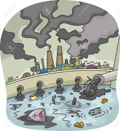

Propuesta de valor
Contexto del problema
En la actualidad el plantea esta sufriendo por múltiples problemas ambientales causados por millones de residuos los cuales no son desechados por los medios adecuados, De acuerdo con Superservicios, en el país se generan 11 millones de toneladas de residuos sólidos al año. Sin embargo, solo se recuperan cerca de un millón de toneladas
El proyecto plantea implementar la banda transportadora para poder separar residuos Frente a la creciente explotación de los recursos naturales, Pon argumentó que el reciclaje de materiales es una oportunidad para aliviar la presión sobre la naturaleza: “Al transformar los materiales que son desechables y darles una segunda oportunidad en su ciclo de vida, se reduce la extracción de recursos naturales y por ende, se contribuye a la primera R, es decir, a reducir”, con esto explicado podemos observar como podemos separar basuras junto con la banda transportadora.

Objetivo del proyecto
En terminos generales se busca diseñar una banda transportadora para el reciclaje de botellas plásticas y latas, que permita separar los envases por tamaño, con el fin de optimizar el proceso de reciclaje y contribuir a la reducción de residuos en el medio ambiente.
Objetivos epecificos
1.Analizar las características de las botellas plásticas y latas para determinar los criterios de separación por tamaño
2.Diseñar un sistema de clasificación automatizado que permita separar las botellas plásticas y latas de acuerdo con su tamaño.
3.Elaborar un prototipo de banda transportadora que incorpore el sistema de clasificación planteado anteriormente
4.Implementar medidas de seguridad y ergonomía en el diseño de la banda transportadora para garantizar la seguridad y bienestar de los operarios durante el proceso de reciclaje.

Historia de creación
El proyecto de la banda comenzo como un proyecto escolar el cual tenia como proposito encontrar una solucion a una problematica actual, teniendo presente un mercado especifico al cual debia ser orientado, el proyecto se moldeo con el pasar del tiempo, comprendiendo mas la problematica a enfrenter, la contaminacion y la poca clasificación de basuras, esto dio como resultado un servicio el cual cumple con lo que promete, separar residuos, estando orientado a un negocio donde nuestro principal cliente serian las empresas